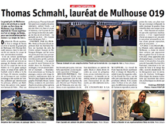

Various materials (80 square meters installation), motion detector and MP3 player on arduino board, music with the voice of Bertrand Dezoteux, text prints on sheets to take away
mulhouse019, young creation biennale, Parc des Expositions de Mulhouse
June 2019


Aux origines, la démesure, faire un enfant.
L’est et l’ouest réunis.
Une plage de coquillages et de fleurs, le sel de mer et de salage réunis.
Fleurs de vie, fleurs de mort.
Venez, je vous en prie.
Arrivée à Bordeaux, un bénévole du festival m’attend dans le Hall 1 de la gare. Casquette « European Spatial Agency » sur la tête, panneau « Big Bang » à la main.
Il est rejoint par deux femmes qui sortent du même train que moi. Une grande rousse aux cheveux longs et bouclés, une petite brune avec un carré lisse duquel rien ne dépasse.
Le bénévole, c’est Yannick. Chauffeur pour l’occasion, c’est un ancien commercial dans le vin qui se dit passionné d’astronomie.
Il a participé à la réalisation d’une image gigantesque, par assemblage de morceaux de papiers de formats A4, image qui a été vue par l’astronaute Thomas Pesquet depuis l’espace. C’est une grande fierté pour Yannick, d’avoir été remarqué par ce conquérant de l’espace.
Il a consigne de nous déposer le plus vite possible à Saint-Médard-en-Jalles, lointaine banlieue bordelaise, où se déroule le festival « Big Bang », un événement qui conjugue art et espace. Mais Yannick nous propose de faire un détour, nous dit que l’on doit garder ça pour nous, qu’il ne faudrait pas que les organisateurs l’apprennent. Il tient à nous prouver son amitié à travers un accueil chaleureux. Visite insolite de la ville par les quais dans le 4 x 4 climatisé qui sent la voiture neuve. Miroir d’eau, place, Cité du Vin au loin, nouveau pont, quartier en complète reconstruction... Virée entrecoupée par des arrêts aux multiples feux rouges.
La rousse, Anilore, est artiste. Elle doit installer la maquette d’une sculpture dans
l’après-midi, avant l’inauguration du soir.
Yannick lui demande : « c’est pour quand la lune ? »
Elle répond : « 2020, 2021, je ne suis pas à un jour près. »
La brune près de qui je me trouve, une bourgeoise style Sophie Calle (dans l’allure et l’attitude espiègle), travaille dans la gestion d’entreprises.
Je lui demande : « la lune, de quoi s’agit-il ? »
Elle me répond : « Anilore a pour projet d’envoyer une sculpture sur la lune. »
Anilore continue : « on se rassemble lors de drames : les attentats, les catastrophes climatiques... Mon projet a pour but de rassembler, c’est une sculpture sur laquelle seront collectées les empreintes d’un million de mains. On pourra la voir depuis la terre avec un télescope de base, elle disposera de sources lumineuses, qui seront comme un appel à dire que tout est possible. Elle sera vivante, comme une fleur, s’ouvrira pendant le jour lunaire et se fermera pendant la nuit. D’habitude je fais de la sculpture monumentale, dans mon travail, les choses se pèsent en tonnes. Pour la< lune, ma sculpture devra être très légère, pas plus qu’un kilo cinq. »
Nous appellerons la brune Sophie car j’ai déjà oublié son prénom, celle-ci ajoute : « pendant le festival vous pourrez donner l’empreinte de vos mains, on les récupère sur deux iPad ! »
Yannick enjoué : « je ne raterai pas cela ! »
Sophie me raconte : « je suis amie de longue date d’Anilore. Je la suis dans ses projets, je la conseille, je suis une sorte de mentor. J’apprécie l’art et ce que fait mon amie, le monde de l’art me coupe de mon univers, il me permet de pousser plus loin mes réflexions intellectuelles. Ce matin, en nous retrouvant dans le train, on a toutes les deux sortis un bounty de nos affaires. Ça nous a fait rire, on a découvert que chacune avait cette habitude de manger un bounty dans le train. Je ne mange jamais de bounty, seulement quand je prends le train. Ah ! C’est à croire que l’amitié tient à peu de choses. »
Je quitte Yannick et les deux femmes qui ont atteint leur destination. Moi, je rencontre mon hôte Sandrine, avec qui je vais poursuivre la route ; elle m’emmène jusqu’à chez elle, là où se trouve mon ami adoré que je rejoins.
Avec Sandrine nous irons jusqu’à Salaunes. Elle et son mari Olivier disposent d’un gîte où nous serons blanchis et nourris le matin.
Je suis attendue avec impatience, mon charmeur de serpent, arrivé il y a deux jours, ne supporte pas cet endroit. Il parle de cette maison comme d’une prison, abandonnée de tout et de tous. Un lieu sans âme, poli, lissé, sans imperfection à part ce qu’il représente.
En voiture surélevée, de nouveau un gros bolide, la visite de la région se poursuit.
Elle est plus étonnante que la première partie. J’ai l’impression d’une excursion dans la savane. Je vois une ligne droite, large, grise, qui nous contraint à avancer vers l’horizon. Sur les côtés, des pins immenses. En face, le soleil tape à travers le pare- brise. Les dix dernières minutes de trajet sont interminables, mes sens se décuplent, le dépaysement est total. C’est une zone périurbaine de campagne, bétonnée. J’attends que ce voyage se termine, j’attends de pouvoir me jeter dans les bras de mon ami et d’y fondre, j’espère le réconforter.
Sandrine a un nez retroussé, des cheveux châtains et longs jusqu’à la taille, bourrue, je la trouve drôle à sa manière. Elle m’explique que cette route a été construite sur l’ancienne voie de chemin de fer, c’est pour ça que c’est une ligne droite, qu’elle s’étend sur dix kilomètres.
Elle ajoute : « toutes les routes sont comme ça ici ! Si on continue après le rond–point, quinze kilomètres de ligne de droite, et, par là-bas, vingt. »
Sandrine prend la direction de gauche au rond-point, on arrive dans le bourg de Salaunes. Constructions beiges et orangées, basses, toits plutôt plats. Peu d’habitations, aucun commerce. Sa maison se trouve un peu plus loin, après un embranchement.
Portail gris à ouverture automatique, elle appuie sur un bouton quelques mètres avant de tourner son volant. À l’entrée, des poules dans un enclos. Sandrine avance jusqu’à sa place de parking, trois places en épis sont dessinées au sol, la sienne est la dernière de l’allée.
À pied, elle m’emmène vers le jardin. Une grande terrasse en pierres blanches derrière la maison principale. La découpe des pierres dessine une ligne droite, marque une frontière avec la partie jardin. L’herbe verte en cette saison est à ras du sol, courte à tel point que l’on voit la terre marron qui se trouve en-dessous. Tout est scindé, millimétré. Ici pas une herbe ne dépasse, car la tondeuse est passée plusieurs fois dans le mois ; pas une mousse n’a le temps de sortir car le nettoyage au Karcher doit être fait avec plaisir. Comment pourrait-il y avoir de la vie animale ?
Au fond du jardin, centrée mais légèrement décalée sur la gauche, une piscine, tout à droite, une maison miniature, une cabane appartement. Ce sera chez moi, chez nous pour quelques jours.
Pour accéder à cette autre partie de jardin, on passe par des pas japonais. Deux rangées de pierres plates alignées, quand l’une est posée à droite, celle de gauche sera un peu plus loin, chaque pierre décalée de cette manière prépare le geste d’un pied qui se déplace.
La piscine s’agrandit, elle est de plus en plus proche. Le lieu me transporte vers la contemplation. L’eau est d’un bleu éclatant, entre eau pure et eau de javel. Le soleil agit sur l’eau. Reflet d’une couleur jaune sur du bleu, couleur azur. Progression d’une mélodie lancinante, les grillons, les chats et les oiseaux cherchent à se faire entendre. Il fallait aller jusqu’au jardin pour le croire, les animaux sont présents. On entend aussi quelques lézards se faufiler, il parait que les serpents aiment venir en été.
La zone périlunaire, Delphine Bertrand


Beaux Arts magazine, Facebook publication

{kind=link}